This page includes all the models covered in the textbook. Each model can be downloaded and run using the free
NetLogo software.
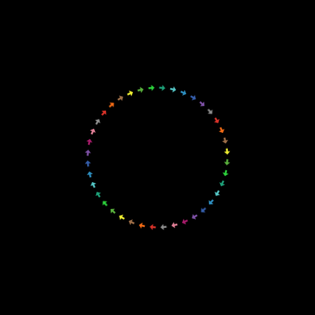
Turtles Circling (p. 8)
This is a kind of mathematical investigation — we are investigating the emergent shape created by the movement of many turtles (arrows) moving independently in simple ways. Each turtle is moving a little step forward and taking a little turn right to stay on a circle of radius 20.
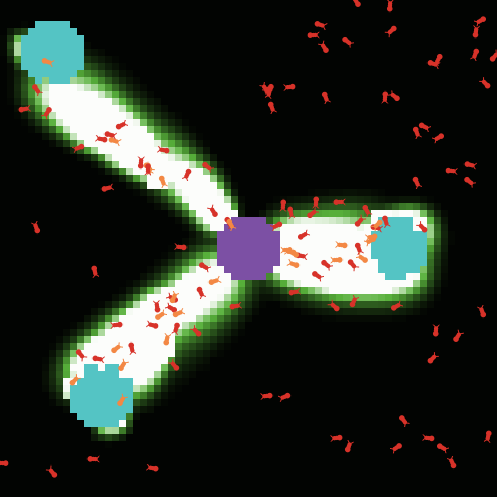
Ants (p. 26)
In this model, a colony of ants forages for food. Though each ant follows a set of simple rules, the colony as a whole acts in a sophisticated way.
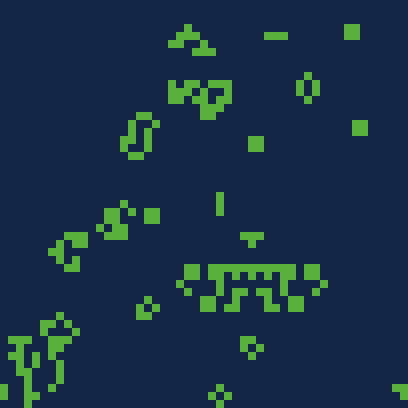
Life (p. 55)
This program is a simple example of the Life model, which is a 2D cellular automaton.
A cellular automaton is a computational machine that performs actions based on certain rules. It can be thought of as a board which is divided into cells (such as square cells of a checkerboard). Each cell can be either “alive” or “dead.” This is called the “state” of the cell. According to specified rules, each cell will be alive or dead at the next time step.
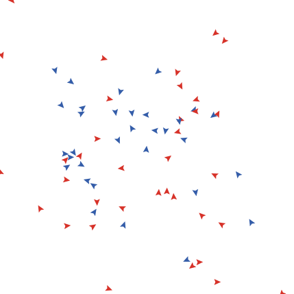
Heroes and Cowards (p. 68)
This model demonstrates the “Heroes and Cowards game. In the game, each person arbitrarily chooses someone else in the room to be their perceived friend, and someone to be their perceived enemy. They don’t tell anyone who they have chosen, but they all move to position themselves either such that a) they are between their friend and their enemy, or b) such that they are behind their friend relative to their enemy.
This simple model demonstrates an idealized form of this game played out by computational agents. Mostly it demonstrates how rich, complex, and surprising behavior can emerge from simple rules and interactions
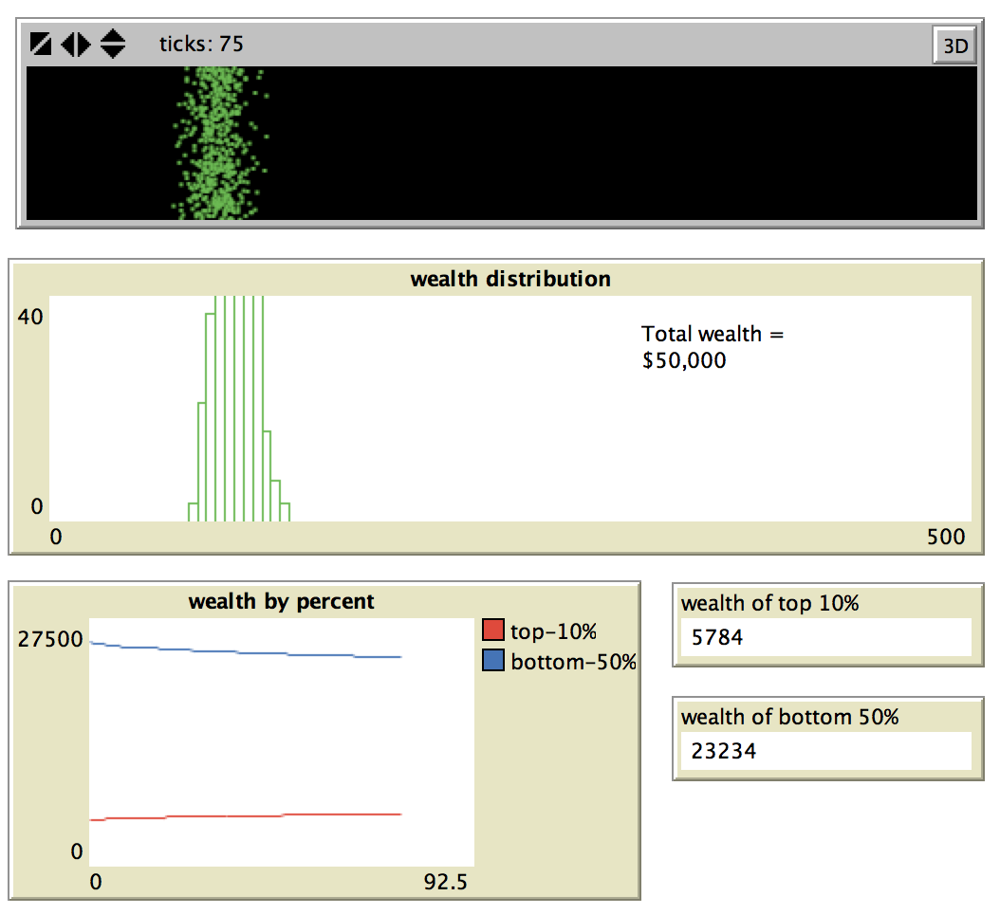
Simple Economy (p. 87)
This model is a very simple model of economic exchange. It is a thought experiment of a world where, in every time step, each person gives one dollar to one other person (at random) if they have any money to give. If they have no money then they do not give out any money.
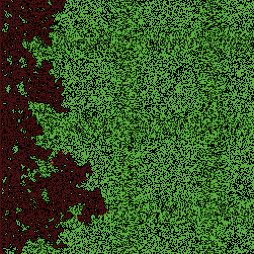
Fire Simple (p. 105)
This model simulates the spread of a fire through a forest. It shows that the fire’s chance of reaching the right edge of the forest depends critically on the density of trees. This is an example of a common feature of complex systems, the presence of a non-linear threshold or critical parameter.
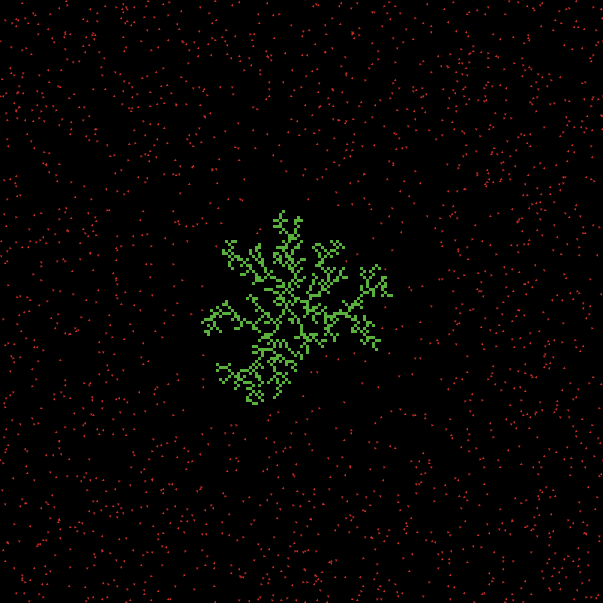
DLA Simple (p. 118)
This model demonstrates diffusion-limited aggregation, in which particles moving (diffusing) in random trajectories stick together (aggregate) to form beautiful treelike branching fractal structures. There are many patterns found in nature that resemble the patterns produced by this model: crystals, coral, fungi, lightning, and so on.
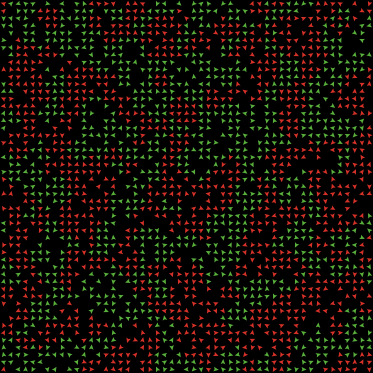
Segregation Simple (p. 128)
This project models the behavior of two types of turtles in a mythical pond. The red turtles and green turtles get along with one another. But each turtle wants to make sure that it lives near some of “its own.” That is, each red turtle wants to live near at least some red turtles, and each green turtle wants to live near at least some green turtles. The simulation shows how these individual preferences ripple through the pond, leading to large-scale patterns. This project was inspired by Thomas Schelling’s writings about social systems (particularly with regards to housing segregation in cities).
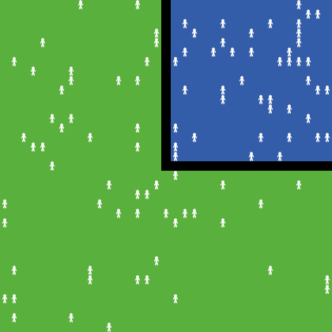
El Farol (p. 141)
El Farol is a bar in Santa Fe, New Mexico. The bar is popular — especially on Thursday nights when they offer Irish music — but sometimes becomes overcrowded and unpleasant. In fact, if the patrons of the bar think it will be overcrowded they stay home; otherwise they go enjoy themselves at El Farol. This model explores what happens to the overall attendance at the bar on these popular Thursday evenings, as the patrons use different strategies for determining how crowded they think the bar will be.
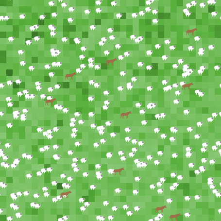
Building the Wolf-Sheep Predation Model (p. 141)
In this chapter we incrementaly build a preditor-prey model of population dynamics. Each version adds a new component to the model.
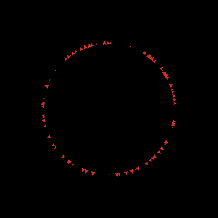
Agentset Ordering (p. 218)
This model explores the order with which constructed agent sets follow their commands. In particular, this model explores how an agentset constructed by collecting agents with a certain property do not automatically update even if the properties of the agents change during a run of the model. The agentset continues to consist of the agents that had that property at the time of agentset construction. In other words, even though you ASK agents that have a particular criterion to take an action, not all agents after the ASK that satisfy that criterion will necessarily take that action, since some of the agent properties may have changed during the ASK execution.
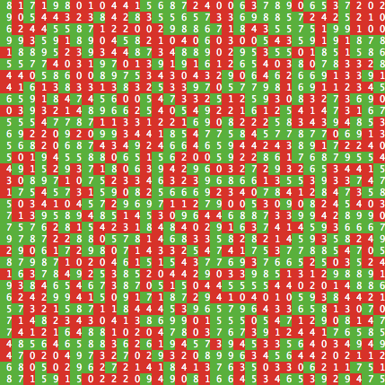
Agentset Efficiency (p. 218)
This model addresses a couple of concerns that can arise when using agentsets, in particular when filtering them using the “with” primitive. The first of these concerns has to do with efficiency: it is best to avoid building the same agentset multiple times. The second concern has to do with the timing of side effects: rebuilding an agentset using the same condition can lead to different results if the state of the agents has changed in the meanwhile.
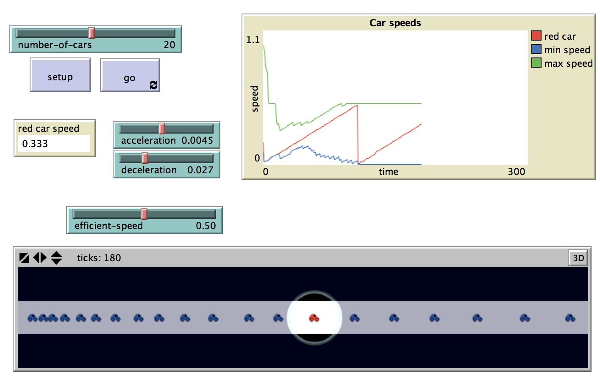
Traffic Basic Utility (p. 226)
This model models the movement of cars on a highway. Each car follows a simple set of rules: it slows down (decelerates) if it sees a car close ahead, and speeds up (accelerates) if it doesn’t see a car ahead.
This model extends the Traffic Basic model, from the social science section of the NetLogo models library, to include a utility function for the cars. The model sets the optimal speed for the cars (best fuel efficiency) to be 0.45. If the acceleration rule speeds the car past the optimal speed, the car decelerates instead of accelerating.
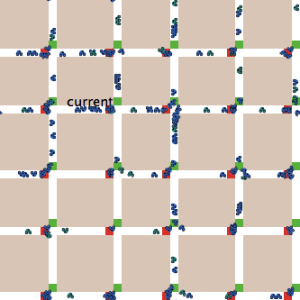
Traffic Grid Goal (p. 227)
The Traffic Grid Goal model simulates traffic moving in a city grid. It allows you to control traffic lights and global variables, such as the speed limit and the number of cars, and explore traffic dynamics.
This model extends the Traffic Grid model by giving the cars goals, namely to drive to and from work. It is the third in a series of traffic models that use different kinds of agent cognition. The agents in this model use goal-based cognition.
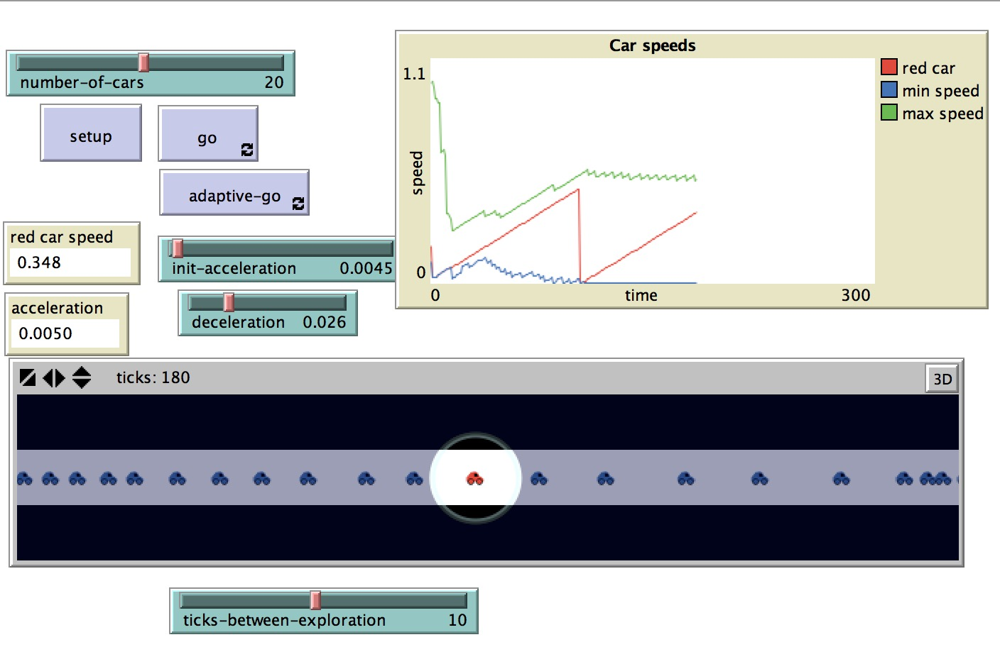
Traffic Basic Adaptive (p. 230)
This model models the movement of cars on a highway. Each car follows a simple set of rules: it slows down (decelerates) if it sees a car close ahead, and speeds up (accelerates) if it doesn’t see a car ahead.
The model extends the Traffic Basic model, from the social science section of the NetLogo models library, by having cars adapt their acceleration speed to maintain a smooth flow of traffic.
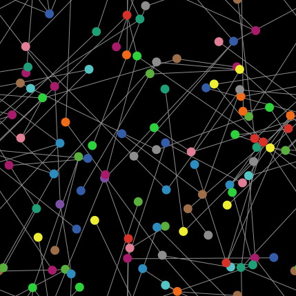
Random Network (p. 244)
The theory of random networks was first introduced by mathematicians Paul Erdős and Alfréd Rényi in 1959. There are several different models for random networks. The most well known are two variants called Erdős–Rényi networks. This model shows four different ways to create random networks, 2 of which create the variants of the classic Erdős–Rényi networks.
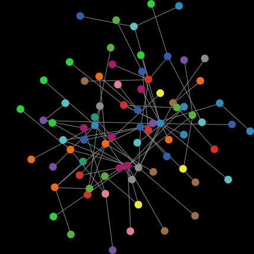
Preferential Attachment Simple (p. 246)
This is a simplified verison of the Preferential Attachment model. It generates a network where the probability of a new link being connected to a node is proportional to the number of links the node already has.
Such networks can be found in a surprisingly large range of real world situations, ranging from the connections between websites to the collaborations between actors. This model generates these networks by a process of “preferential attachment”, in which new network members prefer to make a connection to the more popular existing members.
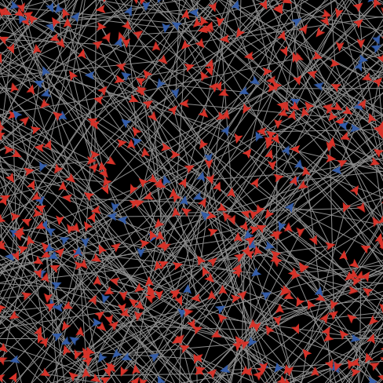
Communication T-T Example (p. 260)
This code example is a variation on the Communication-T-T Example in the Code Examples section of the NetLogo models library. In the original code example, the turtles passed messages to nearby turtles. In this version, the turtles pass messages through a network. One turtle starts out with a message (the red turtle) and she spreads the message to other turtles she is linked with. When a turtle gets the message, it turns red.
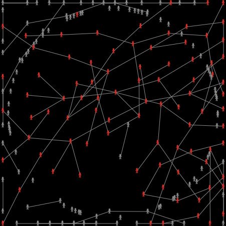
Spread of Disease (p. 283)
This model explores the spread of disease in a number of different conditions and environments. In particular, it explores how making assumptions about the interactions of agents can drastically affect the results of the model.complex, and surprising behavior can emerge from simple rules and interactions